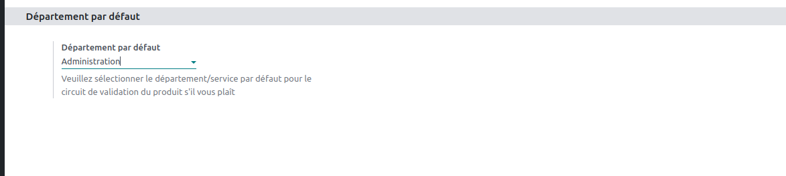

Product Validation Module for Odoo
Welcome to the product validation module description page for Odoo. This module is designed to
add a custom validation feature when creating or modifying products in Odoo.
- Users have the capability to submit requests for the creation of new products. This feature allows employees
or
authorized individuals to initiate the process of adding new products to the company's inventory or catalog.
By
providing essential details and specifications through a structured request form, users can efficiently
communicate their product ideas or requirements to the relevant departments or teams responsible for product
management. This streamlined process enhances collaboration and ensures that new product suggestions are
captured and evaluated for potential implementation within the organization.
Key Features:
-
In our system, administrators have the capability to thoroughly assess and grant approval for product
creation requests. This functionality empowers administrators to meticulously examine the details of each
product creation proposal, ensuring its compliance with established standards and criteria. Once reviewed
and deemed suitable, administrators can readily approve these requests, facilitating a streamlined and
controlled process for introducing new products into our system. This feature enhances transparency and
accountability, as it enables administrators to make informed decisions while maintaining the integrity of
our product catalog :
- Definition of validators (Person authorized to validate a product) :
- Definition of default validators (if no validators are defined in the current department) :

- Definition of a product validation quorum
- Definition of the deadline for generated activities
- Enhancement of product management in Odoo.
This feature is crucial for maintaining data accuracy and ensuring efficient inventory and catalog management. By
implementing this functionality, the system can intelligently detect and alert users when they attempt to add a
product that already exists, thereby minimizing data redundancy and the risk of inconsistencies. This not only
streamlines data entry processes but also enhances overall data quality, helping organizations maintain a clean
and organized product catalog, which is essential for effective decision-making and operations.
Installation :
To install this module, follow the steps below:
- Download the module file.
- Place the file in the Odoo modules directory.
- Access Odoo and install the module via the administration interface.
Configuration :
- Grant administrator rights to users who can configure validators :
- Definition of validators (Persons authorized to validate a product) :
- Definition of a product validation quorum and the deadline for activities (if necessary) :
Technical Support :
If you encounter any issues or have questions, please contact our technical support team at
infos@veone.net or visit our website Veone.